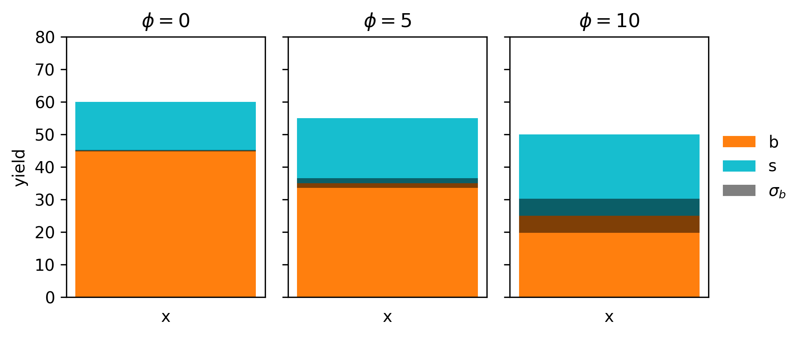
7 Data Analysis in High-Energy Physics as a Differentiable Program
This is the title track of this thesis, and rightly so; it dominated metrics in both my time spent and headspace given for any of the topics I’ve written about. I feel incredibly privileged to have worked on something like this, which is fairly self-contained, and draws upon themes from both machine learning and statistical inference in order to make headway in addressing a long-standing issue: systematic-aware optimization. What’s even cooler is that it goes further than this, opening up a whole variety of possibilities to optimize with the whole statistical inference procedure in the loop, and rethink the ways in which we can improve our workflows. I hope you enjoy it!
7.1 Motivation
Given the success of the Standard Model, analysis of data from the LHC usually occurs for two reasons:
- Precisely measuring Standard Model processes to look for small deviations from their predicted values
- Searching for new physics signatures as predicted by models beyond the Standard Model
When analyzing data in this way, we’ll have lots of free parameters to tune. These can be as simple as a threshold value that you limit the \(p_T\) to, or as complicated as the weights and biases that determine a neural network for identifying \(b\)-jets. We can of course choose any values for these quantities to do our analysis, but the resulting physics that follows may suffer as a result. As such, we’re likely to try some kind of optimization to improve the answers to our physics questions. How do we do this in practice?
In either case above, there is a notion of signal (what you’re looking for) and background (everything else). Generally, we then try to choose a parameter configuration that can separate (or discriminate) the signal from the background, allowing us to extract just the data we think is relevant to the physics process we’re looking at. As an example, machine learning models are often trained using the binary cross-entropy loss as an objective, which corresponds to optimizing the ability of the model to identify whether an event originated from signal or background processes. A closely related goal is the Asimov significance in the case of signal and background event counts \(s\) and \(b\) with no uncertainty on either quantity. The formula for this stems from assuming a Poisson likelihood function as in Section 3.2, and is equal to
\[ Z_A = \sqrt{2\sum_{i\in bins}((s_i + b_i)(\log{(1 + s_i / b_i)}) - s_i)}~. \tag{7.1}\]
As indicated in the sum, these counts can be spread across different bins in the case where your data is a histogram, but the formula is more commonly reduced to the 1-bin scenario that just deals with the overall numbers of signal and background events. In this case, we can then Taylor expand the logarithm to get
\[Z_A = \sqrt{2((s+b)(s/b + \mathcal{O}(s/b) - s)} \approx s/\sqrt{b}~~~\mathrm{for}~s<<b.\]
This makes it much clearer to see that optimizing with respect to \(Z_A\) is just a fancier way of trying to increase the amount of signal compared to the amount of background, which is directly analogous to separating signal from background, just as binary cross-entropy would do.
Now, this is all very sensible of course (we want to discover our signal), but this approach has some shortcomings that distance the efficacy of the resulting configuration from our physics goals. A recent review of deep learning in LHC physics (Guest, Cranmer, and Whiteson 2018) lets us in on why:
(…) tools are often optimized for performance on a particular task that is several steps removed from the ultimate physical goal of searching for a new particle or testing a new physical theory.
(…) sensitivity to high-level physics questions must account for systematic uncertainties, which involve a nonlinear trade-off between the typical machine learning performance metrics and the systematic uncertainty estimates.
This is the crux of the issue: we’re not accounting for uncertainty. Our data analysis process comes with many sources of systematic error, which we endeavour to model in the likelihood function as nuisance parameters. However, optimizing with respect to any of the above quantities isn’t going to be aware of that process. We need something better.
Okay, I hear you: blah blah this is all just talk… let’s prove this scenario needs addressing with an example!
7.1.1 A simplified analysis example, both with and without uncertainty
Let’s define an analysis with a predicted number of signal and background events (e.g. from simulation), with some uncertainty on the background estimate. We’ll abstract the analysis configuration into a single parameter \(\phi\) like so:
\[s = 15 + \phi \] \[b = 45 - 2 \phi \] \[\sigma_b = 0.5 + 0.1\phi^2 \]
Note that \(s \propto \phi\) and \(\propto -2\phi\), so increasing \(\phi\) corresponds to increasing the signal/backround ratio. However, our uncertainty scales like \(\phi^2\), so we’re also going to compromise in our certainty of the background count as we do that. This kind of tradeoff between \(s/b\) ratio and uncertainty is important for the discovery of a new signal, so it may be that can’t get away with optimizing \(s/b\) alone, as the \(p\)-value may be worse!
Let’s start by visualizing the model itself, which we do for three values of \(\phi\) as an example in Figure 7.1.
Using this very simple histogram, we can form a statistical model as if we’re using Section 3.2 principles, which would look something like
\[ p(x | \mu) = \mathrm{Poisson}(x | \mu x^{\mathrm{sig}} + \gamma x^{\mathrm{bkg}})\,\mathrm{Normal}(y | \gamma, 1)~, \tag{7.2}\]
where \(\gamma\) is a continuous description of \(\sigma_b\) that we get from interpolating between the yields, just like in the HistFactory approach, which has the constraint term \(\mathrm{Normal}(y | \gamma, 1)\) attached to penalize fitting a value of \(\gamma\) that differs largely from the information provided by \(\sigma_b\).
Using this likelihood, we can calculate the expected discovery \(p\)-value by doing a hypothesis test using the observed data as the Asimov dataset for the nominal model \(\mu, \gamma = 1\). We can plot this across all the values of \(\phi\), and see what value gives us the lowest \(p\)-value (in practice, scanning over the space is computationally impossible for a given analysis configuration and a complicated model). We do this in Figure 7.2, where we include the result using a model both with and without uncertainty. Notice how much the curves differ; if we optimized the model without uncertainty (i.e. optimize for signal/background separation only), we’d end up at the worst solution! This is pathologically constructed of course, but it goes to show that these objectives don’t talk to each other directly.
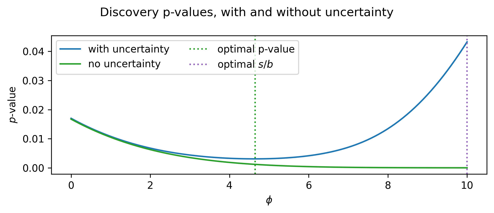
If we optimize this analysis then, we want to arrive at the value of \(\phi\) at the dotted green line (around ~4.3 or so), which gives us the benefit of rejecting the background hypothesis more strongly when the signal exists in the data. This is made possible if we use the \(p\)-value as our objective – it clearly accounts for the uncertainty!
The reason for this makes sense: in these physics likelihoods, we’re careful to include all the details of the systematic uncertainties that we’re able to quantify by constructing nuisance parameters that vary the shape and normalization of the model. From here, to calculate the \(p\)-value, we then construct the profile likelihood ratio as a test statistic, which accounts for these systematic uncertainties by fitting the value of the nuisance parameters depending on the hypothesis you test (see Section 2.3.3 for more).
All this makes the \(p\)-value seem like a good candidate for an objective function! So why haven’t we used this already?
As emphasized in Chapter 4, if we want to perform optimization using gradient-based methods,1 then we need the objective that we optimize to be differentiable. This is not immediately the case for the \(p\)-value – we would have to be able to differentiate through all stages of the full calculation, including model building, profiling, and even histograms, which are not generally known for their smoothness. But say we were able to decompose this complicated pipeline into bite-size chunks, each of which we can find a way to take gradients of. What becomes possible then? This begins our view of data analysis in high-energy physics as a differentiable program.
In the following sections, we’ll take a collider physics analysis apart step-by-step, then see how we can employ tricks and substitutes to recover gradients for each piece. After that, we’ll explore the ways that we can use the result to perform gradient-based optimization of different parts of the analysis with respect to physics goals. We’ll then do it all at once by optimizing a toy physics analysis from end-to-end, exploring the common example of a summary statistic based on a neural network, accounting for uncertainties all the while.
7.2 Making HEP Analysis Differentiable
The goal of this section is to study components within a HEP analysis chain that are not typically differentiable, and show that when we overcome this, we can employ the use of gradient-based optimization methods – both to optimize free parameters jointly, and to use objectives we care about. From there, we’ll examine the typical steps needed to calculate the sensitivity of a physics analysis, and see how we can make that whole chain differentiable at once, opening up a way to incorporate the full inference procedure when finding the best analysis configuration.
First, we’re going to jump right in with an example to illustrate how we can take advantage of gradient descent to optimize a typical problem faced in collider physics analyses: choosing the best selection criteria.
7.2.1 A simple example: cut optimization with gradient descent
We begin with a toy signal and background distribution over some variable \(x\), where the signal lies as a peak on top of an exponentially decaying background, as shown in Figure 7.3.
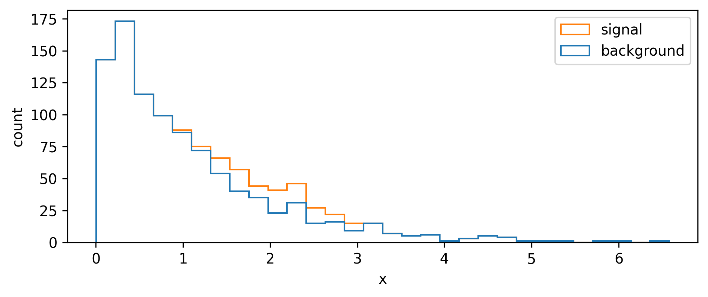
A quintessential operation for data filtering in HEP is the simple threshold, also called a cut: we keep all data above (or below) a certain value of the quantity we’re concerned with. To increase the significance (e.g. as defined by Equation 7.1), we can try to remove data such that we increase the overall ratio of signal to background. In Figure 7.3, it looks like there’s not much signal for low values of \(x\), which motivates us to put a cut at say \(x=1\). We can see the result of applying this cut in Figure 7.4, where we’ve increased the Asimov significance compared to using no cut at all.
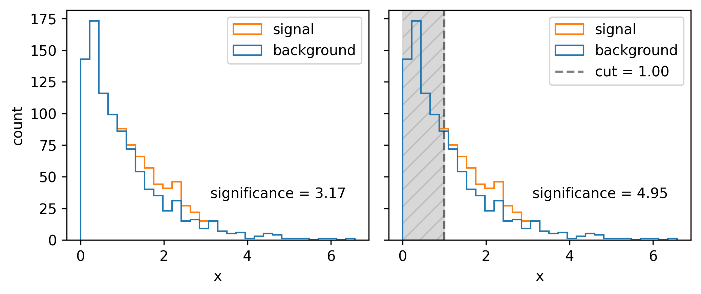
We had a nice go at a guess, but how do we pick the best cut? For this simple problem, it suffices to scan over the different significances we’ll get by cutting at each value of \(x\), then just use the value with the highest significance. Doing this leads to the optimal cut being around \(x=1.54\). In reality, though, this could be an expensive procedure to do for a wide range of \(x\) and for many different cut variables. This prompts the search for some kind of intelligent optimization that can handle large dimensional parameter spaces. Gradient descent is just that! But, to make it work, we need to be able to calculate the gradient of the significance with respect to the cut value – something only possible if the cut itself is differentiable (it isn’t).
To see this, note that cuts are step functions, i.e. logical less than or more than statements. These can be viewed as applying weights to the data – 0 on one side of the threshold, and 1 on the other. If we change the cut value, the events either keep their weight (0 change in significance) or sharply gain/lose their weight value (discrete jump in significance). We would then like to replace this thresholding with a smooth weight assignment such that the cut value varies smoothly with the weights applied. What kind of operation can do this? We have such a candidate in the sigmoid function \(1/(1+e^{-x})\).
Normally, the sigmoid serves as a method to map values on the real line to [0,1], so we leverage this to be used as a cut by applying it to data, which results in a set of weights for each point in [0,1]. (A normal cut does this too, but the weights are all 0 or 1, and you drop the 0s. One could similarly threshold on a minimum weight value here.)
Practically, we introduce slope and intercept terms that control the sigmoid’s \(x\) position and how “hard” the cut is: \(1/(1+e^{-\mathrm{slope}(x-\mathrm{cut~value}})\). This slope allows us to control the degree to which we approximate the cut as a thresholding operation, with higher values of the slope meaning less approximation (but this will also increase the variance of the gradients, as we’re getting closer to the discrete situation outlined previously). See the sigmoid plotted with different slopes in Figure 7.5.
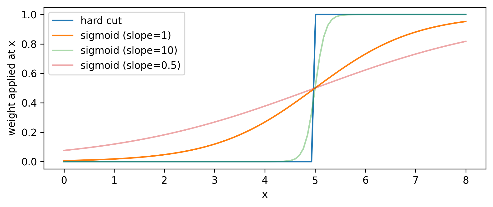
Now that we have a differentiable cut, we can see what the significance scan looks like for both the differentiable and standard cases, shown in Figure 7.6. It’s an interesting plot; there’s a clear smoothing out of the overall envelope of the significance in comparison to using the hard cut. However, the important thing is the coincidence of the maxima: when optimizing, we’ll use the differentiable cut, but we’ll plug the value of the cut position from the optimization back in to the hard cut for our actual physics results. This is a very important distinction - we don’t use approximate operations in the final calculation! Moreover, since we can control the degree to which we’re approximating the significance landscape, one could even imagine a fine-tuning of the slope when we’re close to a local minima during optimization, allowing us to make jumps more in-line with the true optimum value (though this is not explored here).
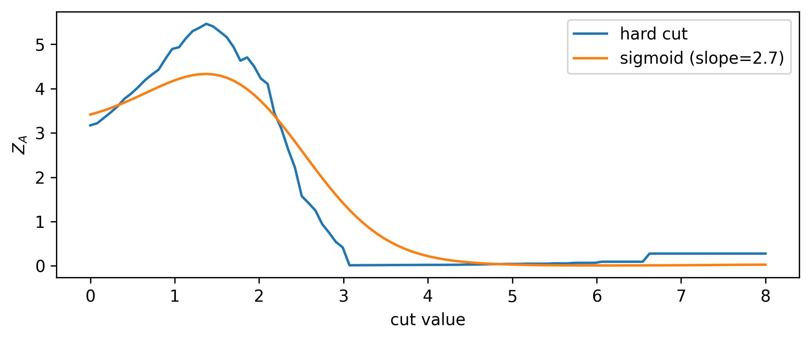
Now that we’ve done the groundwork, we can do the optimization and see if we converge to the correct result! Using gradient descent and the Adam optimizer with a learning rate of 1e-3, we find the cut shown in Figure 7.7 (we optimize \(1/Z_A\) since we’re doing minimization). The significance (calculated with the hard cut) is extremely close to the best possible value, so I’d call this a success!
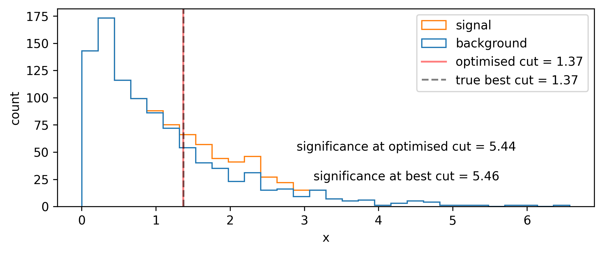
7.2.2 Examining a typical analysis
Now that we’ve looked at an example of the kind of thing we may want to do, we can zoom out and look at the big picture. Given a pre-filtered dataset, a commonly used analysis pipeline in HEP involves the following stages:
Construction of a learnable 1-D summary statistic from data (with parameters \(\varphi\))
Binning of the summary statistic, e.g. through a histogram
Statistical model building, using the summary statistic as a template
Calculation of a test statistic, used to perform a frequentist hypothesis test of signal versus background
A \(p\)-value (or \(\mathrm{CL_s}\) value) resulting from that hypothesis test, used to characterize the sensitivity of the analysis
We can express this workflow as a direct function of the input dataset \(\mathcal{D}\) and observable parameters \(\varphi\):
\[ \mathrm{CL}_s = f(\mathcal{D},\varphi) = (f_{\mathrm{sensitivity}} \circ f_{\mathrm{test\,stat}} \circ f_{\mathrm{likelihood}} \circ f_{\mathrm{histogram}} \circ f_{\mathrm{observable}})(\mathcal{D},\varphi). \tag{7.3}\]
Is this going to be differentiable? To calculate \(\partial \text{CL}_s / \partial \varphi\), we’ll have to split this up by the chain rule into the different components, which can be written verbosely as
\[ \frac{\partial\,\mathrm{CL}_s}{\partial \varphi} = \frac{\partial f_{\mathrm{sensitivity}}}{\partial f_{\mathrm{test\,stat}}}\frac{\partial f_{\mathrm{test\,stat}}}{\partial f_{ \mathrm{likelihood}}} \frac{\partial f_{\mathrm{likelihood}}}{\partial f_{\mathrm{histogram}}} \frac{\partial f_{\mathrm{histogram}}}{\partial f_{\mathrm{observable}}} \frac{\partial f_{\mathrm{observable}}}{\partial \varphi}~. \tag{7.4}\]
In the case of an observable that has well-defined gradients with respect to \(\phi\) (e.g. a neural network), the last term in Equation 7.4 is possible to calculate through automatic differentiation. But none of the other terms are differentiable by default! We’re going to have to figure out some way to either relax (make differentiable) these operations, or use tricks to make the gradient easier to calculate. This is explored in the following sections, starting with the histogram.
7.2.3 Binned density estimation (histograms)
Histograms are discontinuous by nature. They are defined for 1-D data as a set of two quantities: intervals (or bins) over the domain of that data, and counts of the number of data points that fall into each bin. For small changes in the underlying data distribution, bin counts will either remain static, or jump in integer intervals as data migrate between bins, both of which result in ill-defined gradients. Similarly to the cut example with the sigmoid, we’re assigning a number (there the weight, and here a count in a bin) in a discrete way to the data – to make this differentiable, we need to come up with a smooth version of this that allows gradients to be calculated across the result.
To say a little more to that effect, we’ll look at the types of gradients that we may be interested in. Say we have a data distribution that depends on some latent parameter \(\mu\), e.g. data that’s drawn from \(\mathrm{Normal}(\mu, 1)\). We can then make a histogram of the resulting data. What happens to that histogram When we shift the value of \(\mu\)? Well, shifting the mean will just translate the histogram along the \(x\)-axis; an example of this is shown in Figure 7.8 for a couple values of \(\mu\) (with the random seed kept constant).
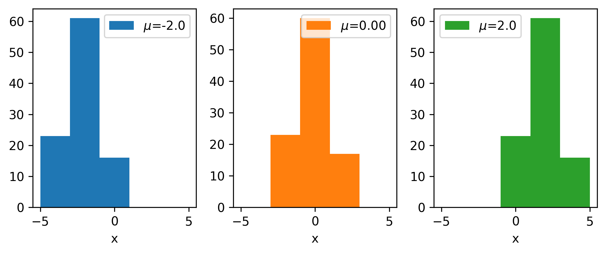
Let us now shift our focus to a single bin: we’ll choose the bin centered on 0, and monitor its height as we vary \(\mu\), shown in Figure 7.9.
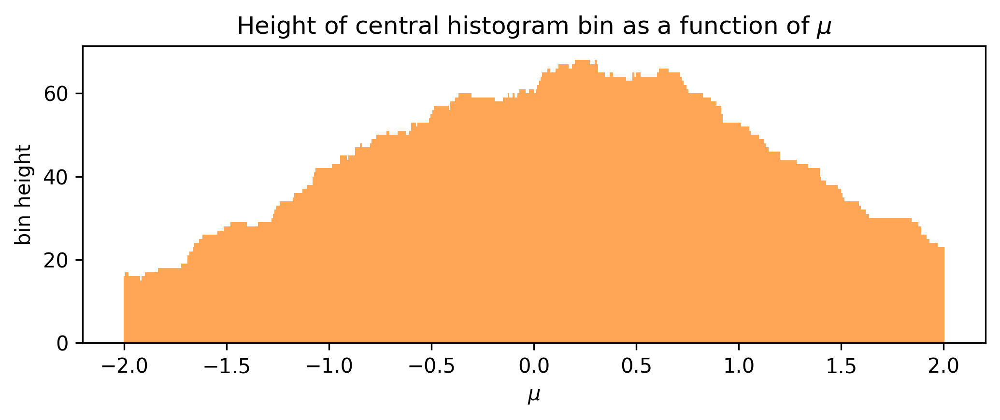
We can see that the bin height jumps around in discrete intervals as we translate the underlying data, which would produce ill-defined gradient estimates if we used something numerical like finite differences. To exploit the magic of automatic differentiation here, we want to make some other function such that this envelope becomes smooth; varying \(\mu\) by a very small amount should also vary the bin height by a small amount instead of leaving it static or jumping discontinuously.
The solution that we developed to address this involves a kernel density estimate (KDE). We discussed this in Section 3.1.2, but just to recap: a KDE is essentially the average of a set of normal distributions centered at each data point, with their width controlled by a global parameter called the bandwidth. There’s a neat way to take this and cast it into a bin-like form (i.e. defined over intervals): We can calculate the “count” in an interval by taking the area under the KDE between the interval endpoints. We can do this using the cumulative density function (cdf), as \(P(a \leqslant X \leqslant b) = P(X \leqslant b) - P(X \leqslant a)\). Since the KDE is the mean over some normal distributions, its cdf is also just the mean of the cdfs for each normal distribution. Moreover, to turn this into a histogram-like object, we can multiply the result by the total number of events, which just changes the mean into a sum. We put this all together in Figure 7.10, where a pseudocoded implementation of a binned KDE (bKDE) can be found.
def bKDE(data: Array, bins: Array, bandwidth: float) -> Array:
edge_hi = bins[1:] # ending bin edges ||<-
edge_lo = bins[:-1] # starting bin edges ->||
# get cumulative counts (area under kde) for each set of bin edges
cdf_hi = norm.cdf(edge_hi.reshape(-1, 1), loc=data, scale=bandwidth)
cdf_lo = norm.cdf(edge_lo.reshape(-1, 1), loc=data, scale=bandwidth)
return (cdf_hi - cdf_lo).sum(axis=1) # sum cdfs over each kernel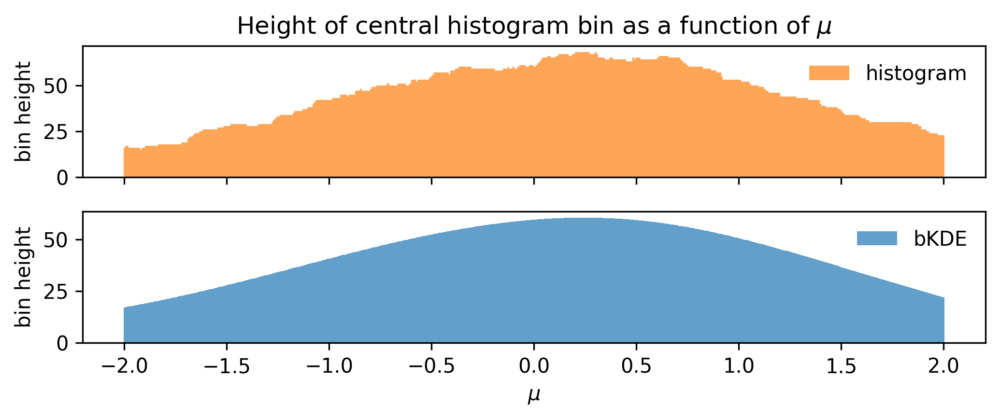
Using this, we can remake the plot from Figure 7.9 for the bKDE, which we can see in ?fig-bin-height-bKDE, showing that the variation of the bin height with \(\mu\) is much more well-behaved.
Choosing the bandwidth
I’ll show a few studies here that illustrate what happens to the accuracy of the bKDE histogram from the perspective of both the distribution and the resulting gradients.
We know what happens to a KDE when we change the bandwidth: small bandwidth gives a function with high variance, and a large bandwidth oversmooths the distribution. How do these effects impact the bKDE? We can quantify this relative to the bin width by examining the shape of the bKDE relative to a “hard” histogram, which is shown in Figure 7.12. For low bandwidths, we recover something almost resembling a regular histogram. In fact, in the limit of zero bandwidth, we will exactly get a histogram! The reason is that zero bandwidth would turn each normal distribution into an infinite spike at each data point, which, when integrated over to get the counts, would have a contribution of 1 if the event lies in the bin, and 0 otherwise2.
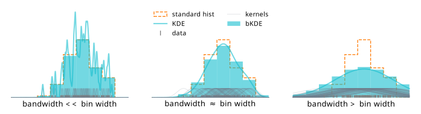
This idea of a bias/variance tradeoff with the bandwidth is the gist of it, but there’s an additional factor that will influence the value of the bandwidth chosen: the number of data samples available. We may expect that as we add more samples to a KDE, there will be a lot more kernels centered on the new points, so we’d want to reduce the bandwidth in order to faithfully represent the envelope of the distribution. We then can inspect the degree to which this also continues to hold for the bKDE; it may be that good defaults for KDEs differ slightly compared to those for bKDEs.
First, let’s examine the distribution accuracy as a function of bandwidth and number of data samples. We can define this by looking at the “true” histogram, which can be calculated using the cumulative distribution of \(\mathrm{Normal}(\mu, 1)\) in a way analagous to the bKDE (i.e. the integral under the curve over the intervals defined by the bins), which we then normalize to the number of data samples available. We can then plot the true height of the central bin as it varies with \(\mu\), and compare it to that obtained from the histogram and bKDE estimates across a number of different settings for the sample size and bandwidth. These plots are shown in Figure 7.13, which looks at bandwidths of 0.05, 0.5, and 0.8 in tandem with sample sizes of 20, 100, and 5000. As expected, we see that the low bandwidth case has the histogram and bKDE predictions for the bin mostly agreeing, while they diverge for larger bandwidths. The best-case scenario appears to be when we have a large number of samples and a low bandwidth, which is when we’d expect all three estimates to converge. If we choose a bandwidth too large though, we’re going to introduce a bias as we oversmooth the data features.
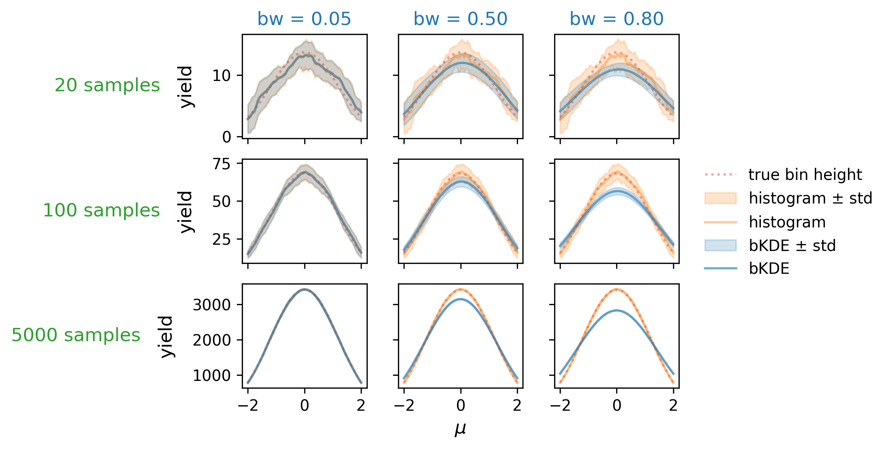
So far things seem all to follow intuition somewhat, but we’ve only checked half the picture; the whole reason we’re using the bKDE construct in the first place is so we can access gradients of the histogram yields. To study these, we can derive the “true” gradients from the definition of the bin height: as before, a bin defined by \((a,b)\) for a given \(\mu\) value is just
\[\operatorname{yield}_{\mathsf{true}}(\mu; a,b) = \Phi(b;\mu, \sigma) - \Phi(a;\mu, \sigma) ~,\]
where \(\Phi(x; \mu, \sigma)\) is the normal cumulative distribution parametrized by \(\sigma, \mu=\). We can then just take the gradient of this expression with respect \(\mu\) by hand. First we write the explicit definition of the cdf:
\[\Phi(x; \mu, \sigma) = \frac{1}{2}\left[1+\operatorname{erf}\left(\frac{x-\mu}{\sigma \sqrt{2}}\right)\right]~,\]
where the convenient short hand of the error function \(\operatorname{erf}\) is given by
\[ \operatorname{erf}(x) \equiv \frac{2}{\sqrt{\pi}} \int_0^x e^{-t^2} d x~. \]
Then, the derivative is as follows:
\[\frac{\partial}{\partial\mu}\Phi(x;\mu, \sigma) = \frac{1}{2}\left[1-\left(\frac{2}{\sqrt{2\pi}\sigma} e^{-\frac{(x-\mu)^2}{2\sigma^2}}\right)\right]~,\]
since \(\frac{d}{dx} \operatorname{erf}(x)=\frac{2}{\sqrt{\pi}} e^{-x^{2}}\).
As mentioned, we have \(\sigma=1\) in this particular example, making this expression simpler:
\[ \frac{\partial}{\partial\mu}\Phi(x;\mu, \sigma=1) = \frac{1}{2}\left[1-\left(\frac{2}{\sqrt{2\pi}} e^{-\frac{(x-\mu)^2}{2}}\right)\right]~.\]
Putting this all together gives us
\[\Rightarrow \frac{\partial}{\partial\mu}\operatorname{yield}_{\mathsf{true}}(\mu; a,b) = -\frac{1}{\sqrt{2\pi}}\left[\left(e^{-\frac{(b-\mu)^2}{2}}\right) - \left( e^{-\frac{(a-\mu)^2}{2}}\right)\right]~,\]
which we can use as a way to quantify the accuracy of the gradients obtained from using a bKDE compared to those of the amount of the true distribution in the interval \((a,b)\).
The comparative plots between the true gradient, the histogram gradient, and the bKDE gradient are shown in Figure 7.14, where the histogram gradient is calculated using the finite differences method, and the bKDE gradient with automatic differentiation. A similar trend can be seen to Figure 7.13, where the estimate from the bKDE improves with more samples, and becomes much less noisy. This is in contrast to the histogram, which struggles with gradients unless the sample size is large (here 5000), and produces very high variance estimates in general. The bKDE, however, is able to avoid this high variance while keeping a reasonably low bias depending on how many samples are present; the central plot, for instance, shows a case where the bKDE of bandwidth 0.5 far outperforms estimating the true gradient with just 100 samples compared to the erratic estimates using the regular histogram.
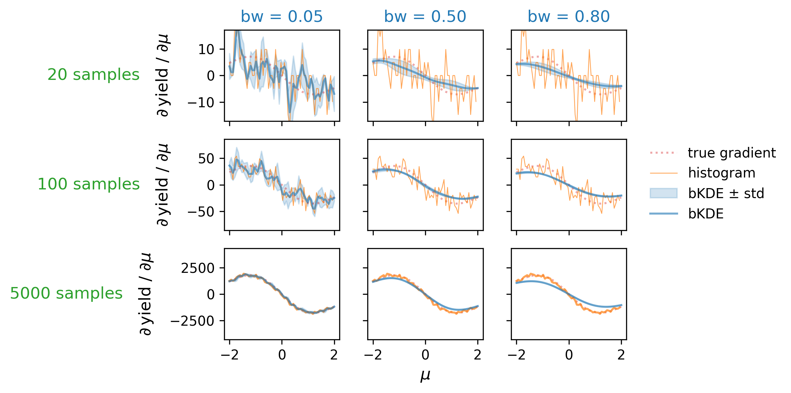
It seems then that there is some kind of middle ground to be had with respect to the bandwidth one can choose for a bKDE depending on the number of samples present, where the trends of distribution and gradient accuracy roughly align. Optimality seems to be in the high-sample and low-bandwidth case. To look at this at scale, we can summarize each of these plots into a single number, e.g. the mean relative error, and see how this number varies across a large grid of different configurations for the number of samples and the bandwidth. This plot can be found in Figure 7.15, where a number of grid points are taken for combinations of bandwidth/sample size, and the absolute relative error in the gradient has been calculated (and averaged across three random seeds, then a second averaging over 500 values of \(\mu\) in (-2,2)). Orange scatter points are overlayed to show the bandwidth choice that yields the minimum relative error given each of the studied sample sizes. The trend is generally in agreement with that which we saw in Figure 7.14 of higher sample size letting us choose lower bandwidths, but there’s definitely a little pause for thought given the couple points that deviate from forming a neat straight line. There also appears to be a little pocket of lower error around 2000 samples, which doesn’t appear to have any obvious explanation. Given more time, one could study this in detail with a much finer grid (memory and temporal limitations prevented expanding this further), and for a variety of different examples, then maybe perform symbolic regression to infer a good rule of thumb. This could also be recasted into a rule of thumb relative to the bin width, which could be a useful metric for comparison (e.g. in Figure 7.12 shown earlier).
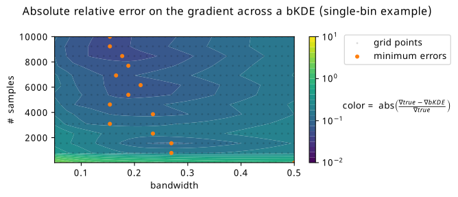
Other differentiable binned density estimates
In the INFERNO paper (Castro and Dorigo 2019), from which much inspiration was taken in general, they use a softmax function as a way to mimic binned output from the neural network, which would have an output dimensionality equal to the number of bins you want in your histogram. We can then think about each data point having a weight of 1, and having the softmax smoothly distribute that weight across the different bins. For a dataset \(\mathbf{x}\) and a fixed neural network \(\mathbf{y}\) with output nodes \(y_i\) up to \(y_N\), the yield of bin \(i\) in the histogram is calculated by summing the softmax contributions from each data point in that bin:
\[\begin{align} \text{softmax histogram}_{\text{bin } i}(\mathbf{x}) &= \sum_{\text{data }k} \text{softmax}(x_k, y_i) \\ &= \sum_{\text{data }k} \frac{e^{y_{i}(x_k) / \tau}}{\sum_{j=0}^{\text{N}} e^{y_{j}(x_k) / \tau}}~, \end{align}\]
where \(\tau\) is a factor to tune how hard the slope of the softmax is, i.e. it has some analogy to the bandwidth about tuning the level of approximation. A drawback, however, is that the softmax used in tandem with a neural network does not come with an inherent notion of ordering; it’s going to be somewhat arbitrary in which bins events occupy, and the resulting plots are a little hard to interpret compared to regular histograms. Also, even the “hard” softmax with \(\tau \rightarrow \infty\) is difficult to map to some other “true” histogram in which the bins follow Poisson-distributed counts.
As for other things, one could always do something like overlap sigmoid functions, or even make a KDE with a new histogram-like kernel. We’ll cap our imagination here though, and move onwards to the likelihood that this histogram is part of.
7.2.4 Differentiable likelihood construction
Now, I must confess, I have told you a bit of a white lie to set up the motivation here. The likelihood function as described in Equation 3.5 is indeed a-priori differentiable with respect to the histograms that make up the expectations. The problem is actually a technical one – we need to make this happen in code. As per our conversations on automatic differentiation, we know how to do this: we code up our program using a framework for automatic differentiation that has defined primitives and gradient rules. pyhf Heinrich et al. (2021) is the software package that brings this to life: the whole HistFactory prescription, all coded using a choice of autodiff backends, e.g. JAX, TensorFlow, and PyTorch. There’s honestly not too much else to say here; any further discussion would involve extremely niche and technical topics within the pyhf codebase, and all the error messages I saw over the years I worked on trying to hack things together. I’ll spare you that discussion (feel free to ask about it, or browse the pyhf issues on the topic), and we’ll move on to something a little more thesis-suited (though, what is a PhD if not niche and technical…).
7.2.5 Differentiable test statistics (profile likelihood ratio)
Recall from Section 3.3 that when we’re constructing test statistics, we’re using the building block of the profile likelihood ratio, which we state once again as
\[ \lambda(x, \mu) = \frac{p\left(x|\mu,\hat{\hat{\theta}}(\mu)\right)}{p\left(x| \hat{\mu}, \hat{\theta}\right)}~. \]
The variables \(\hat{\hat{\theta}}(\mu)\) and \(\hat{\mu}, \hat{\theta}\) are the result of two separate maximum likelihood fits. Are these differentiable? Well, yes – we can leverage the utility of automatic differentiation to trace each iteration of the optimization loop at runtime, and then do the corresponding gradient calculation by composing VJPs and the like. However, that could get really expensive as the number of iterations gets into the thousands, which isn’t too uncommon in practice. Do we have a way to get around this?
Thanks to the groundwork we set up in Section 5.3, we worked out that we can take the gradient of fixed points (e.g. solutions to minimization algorithms) through a simple analytic formula in terms of the update step \(f\), the solution of the optimization problem \(\theta_0\) (or \(\hat{\theta}\)), and some particular value of \(\varphi=\varphi_0\) that we used to define the objective:
\[ \frac{\partial\theta_0}{\partial\varphi_0}= \left[I - \frac{\partial f}{\partial \theta_0} \right]^{-1} \frac{\partial f}{\partial \varphi_0}~. \tag{7.5}\]
What does \(\varphi\) mean here? It corresponds to the same \(\varphi\) that we’re talking about in this section (the notation was not a coincidence)! Specifically, these would be the analysis configuration parameters (e.g. a combination of neural network parameters, observable binning, cutflow, etc.), which all implicitly determine the form of the likelihood. The language of “implicit” refers to the fact that we build the likelihood using the counts of the histograms for each physics process, with those counts in turn being influenced by \(\varphi\), but we do not explicitly denote the likelihood as \(p(x|\mu, \theta, \varphi)\), for instance.
In practice, we can implement this through moving the goalposts for what we call a primitive: for optimization loops like this, we can define that as a primitive of sorts, and then give it the known gradient as defined by Equation 7.5. This is the kind of approach taken by jaxopt (Blondel et al. 2021), which is a library that’s used a few times in this thesis.
7.2.6 Differentiable hypothesis tests
What’s left to get us over the line to differentiating the result of a hypothesis test? Well, thanks to the formulae outlined in Section 3.3, to extract the expected (read: median) \(p\)-value from the observed value of the test statistic \(t(x_0)\), we only need to do one last simple algebraic calculation:
- For the discovery \(p\)-value with test statistic \(q_0\): \(p_0 = 1-\Phi(\sqrt{q_0})\).
- For the \(p\)-value associated with setting an upper limit using test statistic \(q_\mu\): \(p_\mu = 1-\Phi(\sqrt{q_\mu})\).
- For the \(\text{CL}_s\) method, we can just compose the \(p\)-values from the previous step using different values of \(\mu\) in \(q_\mu\) as the point null: \(\text{CL}_s = p_{\mu=1} / (1-p_{\mu=0})\).
All of these formulae are differentiable without any extra work, so we’re done!
7.2.7 Bonus: Uncertainties on likelihood parameters
Recall from Section 2.2.1 that the Fisher information matrix \(\mathcal{I}(\theta)\) gives us access to the covariance matrix for maximum likelihood estimates, provided we’re in the asymptotic limit, through the Cramér–Rao bound:
\[ \Sigma_{\hat{\theta}}^{2} \geqslant [\mathcal{I}(\theta)]^{-1}~. \]
Since \(\mathcal{I}(\theta)\) is defined in terms of second-order derivatives of the log-likelihood – something that we’ve already made differentiable from a code perspective – we can then calculate the Fisher information using automatic differentiation. Moreover, since function transformations like the gradient operator are composable in automatic differentiation frameworks, this will itself be differentiable! This gives us access to many other inference-aware quantities that we can use as both diagnostics and as loss functions, including diagonal elements of the covariance matrix, which correspond to the individual uncertainties on each likelihood parameter. This approach was first explored by INFERNO (Castro and Dorigo 2019), from whom we take much inspiration from in this section.
Now, the fisher information involves a matrix filled with second derivatives of the likelihood, and so requires data and parameters to be evaluated as a number. One thing we can do in the HistFactory setting is use Asimov data, which would mean we’ll be able to know the best-fit parameter values already, and we can attempt to achieve the Cramér–Rao bound in Equation 2.7 by evaluating at \(\mu=\mu'\), \(x=x_A(\mu')\). As to the choice of \(\mu'\), I’m not sure that it matters too much, as we’re always going to be at the best fit parameter value for \(\mu\) (the likelihood shape itself isn’t affected by this, for instance), but I haven’t studied this in detail.
7.3 Putting it all together!
Now that we’ve enabled the differentiability of all the components layed out in Equation 7.3, we can see what happens when we use use the \(p\)-value as out loss function, i.e. use gradients in Equation 7.4 to update the parameters \(\varphi\).
As a first example, we can look at the simple analysis from Section 7.1.1 as a candidate to test this out on! We were looking for the value of \(\phi\) that corresponds to the best expected sensitivity to the signal model. Crucially, we needed to make sure that we accounted for the systematic uncertainty on the background \(\sigma_b\), which heavily influenced the resulting optimization. Let’s see if we can do that!
The results of training this setup to optimize \(\phi\) with respect to the discovery \(p\)-value can be seen in Figure 7.16. Immediately, we can see that we’ve managed to find a point that minimizes the objective we care about, being able to incorporate uncertainty all the while! One thing I really like about this plot is the way it appeals to intuition – the expected counts that result from this procedure appear to be exactly at some medium compromise between signal to background ratio and uncertainty on the background. The acquired Swede within me would even go as far as to call it “lagom” – not too little, not too much; just the right amount3.
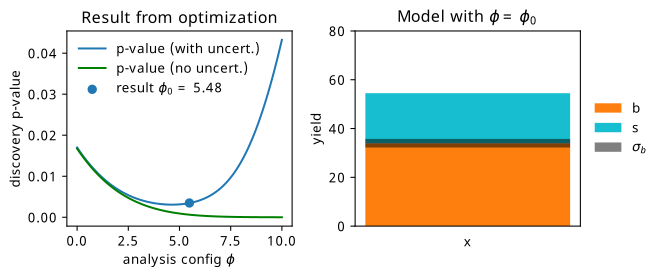
7.3.1 A quick aside on INFERNO vs neos
My advocacy hereafter is to refrain from using neos or INFERNO methodology naming, since these methods differ only on small implementation details, the main one being the choice of loss function.
One interesting thing to note: we’re calculating the expected discovery \(p\)-value using the asymptotic formulae outlined in Section 3.3. Minimising this \(p\)-value corresponds to pushing the observed value of the \(q_0\) test statistic as far to the right as possible (i.e. maximizing its value), which will trap smaller and smaller proportions of the distribution \(p(q_0 | \mu_0)\) (smaller \(p\)-values). Recall that Equation 3.6 states that we know an interesting fact about this test statistic: it’s approximately equal to \(\left((\mu_0 - \hat{\mu}(x))/\sigma_{\hat{\mu}}\right)^2\). Since we’re using Asimov data with \(\mu'=\hat{\mu}=1\), and probing a null of \(\mu_0=0\), the test statistic is actually an (inverse) estimate of the variance of \(\hat{\mu}\), which is being minimized during optimization! This has a lot of similarities with INFERNO, since both methods are effectively minimizing the same quantity, but estimated a different way; INFERNO uses the Fisher information estimate, and neos uses asymptotic formulae.
If we were to apply this same logic to calculating a \(p\)-value (or a \(\mathrm{CL}_s\) value) for upper limit setting, then we’d insead be using \(q_\mu\), and would typically examine Asimov data with \(\mu'=\hat{\mu}=0\) (no signal) while looking at a null of \(\mu_0=1\). We would then still end up with the same relation of inverse proportionality to \(\sigma_{\hat{\mu}}^2\). Of course, the test statistics \(q_0\) and \(q_\mu\) differ conceptually in their definition, so there are likely going to be differences in practice if we used one or the other for optimization (but we would definitely expect a reduced uncertainty on \(\hat{\mu}\) in either case). We’ll see these differences in practice later on.
Equipped with these systematic-aware (or more aptly, inference-aware) loss functions, we can now apply them to something a little more complicated.
7.4 neos: End-to-End Optimized Summary Statistics for High-Energy Physics
This section summarizes the work I’ve done in the paper (Simpson and Heinrich 2021). New follow-up studies will be shown in later sections.
The problem of reducing a whole set of physics quantities into a single number, or summary statistic, is not a new one in HEP. The reason for this is two-fold: inference in high-dimensional settings is computationally difficult, and the probability model defined by the underlying physics is intractable to explicitly compute. This leads to practice referenced a few times already, where we construct models via HistFactory, which are almost always based a single quantity, e.g. something like the invariant mass of the final state you’re interested in, or the output of a machine learning model. In the latter case, we’re typically concerned with optimizing for discriminating signal and background processes. However, we know from the previous sections that we can do much better by optimizing with respect to a \(p\)-value, especially when we have significant systematic uncertainties to worry about.
To be more concrete: we’ll look at optimizing a neural network-based summary statistic for a simple HEP-like situation, including the construction of the uncertainty through interpolating between “up” and “down” variations of the background. We’ll refer to this workflow as neos4, with the full proposed pipeline shown in Figure 7.17.
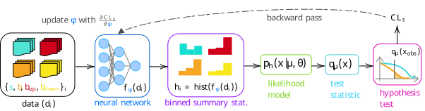
neos.7.4.1 Example: Gaussian blobs
Pretending our detector only outputs two physics variables \(x\) and \(y\), we’ll generate some toy data from different 2-D normal distributions (“Gaussian blobs”) for both signal and background, making sure they overlap a bit as to not be trivially separable. We’ll then also sample from Gaussian blobs on either side of the background, and treat these as “up” and “down” variations in the way described in Section 3.2.2. We can see the result of sampling 10k points for each blob in Figure 7.18.
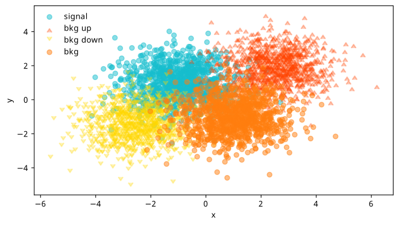
From here, things follow the diagram in Figure 7.17:
- We’ll pass the samples of \(x, y\) values for each blob through a neural network, which turns each tuple of \((x, y)\) into a single number \(f_\varphi(x, y)\), where \(f_\varphi\) is our current network with parameters \(\varphi\).
- We’ll then have four sets of values of \(f_\varphi\) for each blob (signal, nominal background, and the up and down variations of the background), which we then turn into four histograms. During optimization, this histogram will be a bKDE as per Section 7.2.3 to make the final loss (\(\mathrm{CL}_s\)) differentiable, but we’ll replace it with a regular histogram for calculating our evaluation metrics.
- Using these histograms, we’ll build a HistFactory statistical model in exactly the same fashion as Equation 7.2 – with one parameter for the signal strength \(\mu\), and one nuisance parameter \(\gamma\) that’s constructed by interpolating the shape variation between the histograms of the nominal, up, and down variations of the background.
- We then build the appropriate test statistic based on this likelihood, and perform our hypothesis test – not on the observed data (we don’t have any), but on the Asimov dataset for that hypothesis (i.e. for a null of \(\mu=1\), we’re going to use the dataset that would result in \(\hat{\mu} = 1\) when fitting the likelihood, which would just be the nominal counts \(s + b\)).
- The final step is producing the end result of that test (e.g. \(\mathrm{CL}_s\)), then taking the gradient of that whole chain, which we’d use to update the parameters of the neural network \(\varphi\).
We’ll feed data in using mini-batches, and hold out a group of points for each blob as a test set, which we use to calculate metrics and select the best model (normally we should never use the test set to choose a model, but the distributions are simple enough that there will be almost no macroscopic difference between train, validation, and test sets). The histogram yields are all divided by the number of data points per-batch, and then re-scaled to be on the order of tens of events, with different factors being applied to signal and background to put us in a more realistic regime (e.g. of low signal and high background).
In the graphs about to be shown, we’ll benchmark neos against optimization against some other loss functions:
- Binary cross-entropy (BCE): This will try to discriminate signal versus nominal background samples, and will not be informed about the up/down samples during training.
- BCE with data augmentation: As above, but we indiscriminately label all of the background samples with one label instead of using just the nominal (this should be a very powerful baseline).
- INFERNO: As in Section 7.2.7, we’ll take our loss to be the diagonal element of the inverse Fisher information that corresponds to the signal strength \(\mu\).
Results (as shown in the neos paper)
The full set of hyperparameters for this study are:
- 10000 data points, split evenly between all four blobs,
- 3-layer neural network of size (1024, 1024, 1),
- Training with Adam optimiser, learning rate 1e-3,
- Adam optimiser also used in maximum likelihood fits with learning rate 1e-3,
- \(m_\mathrm{s}=(-1, 1)\), \(m_\mathrm{b}=(2.5, 2)\), \(m_\mathrm{bup}=(-2.5, -1.5)\), \(m_\mathrm{bdown}=(1, -1)\),
- Multiplicative histogram scale factors: signal scale=2, background scale=10, global scale=10,
- ReLU activations, with sigmoid activation on the final layer,
- 15 epochs, with a batch size of 2000.
Results from the training process using these hyperparameters are shown in Figure 7.19, where each curve is the average of that metric across 7 different training runs, all with unique random initializations of the neural network parameters. The figure has three plots, which we’ll cover from left to right. Note: these quantities are all computed on the same test set (unseen data), and use no approximations to hard operations in their calculation (which basically means the histogram is a normal one for neos and INFERNO).
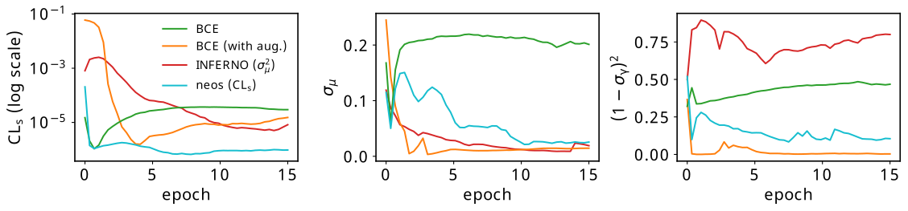
The leftmost plot contains the expected \(\mathrm{CL}_s\) for all four methods. We can see that the absolute lowest value of this is only attained by neos, which makes sense – we’re using this as the loss function itself. Both BCE methods reach a fairly low value quite quickly, which can be attributed to the fact that it’s not that difficult to isolate most of the signal in this example. Interestingly, INFERNO demonstrated far less stability with it’s \(\mathrm{CL}_s\) value, with the different training runs having quite large variance in this quantity, causing their average to perform quite poorly. This says more about the interplay between the uncertainty on the signal strength and the \(\mathrm{CL}_s\) than it does about what we consider “good performance” – I’ll come back to this in the discussion.
The middle plot is the uncertainty on the fitted value of the signal strength \(\sigma_{\hat{\mu}}\), as calculated through the Fisher information. Something I think is cool here is that neos learns to minimize this over time without any explicity prompting to do so (we’ll discuss more on this later). It’s no surprise that INFERNO does very well here, as again, it’s trained precisely to do so. BCE with augmentation also does very well, which is likely because we’ve ensured that anything that is non-signal looking, including possible variations on the background, is pushed to one side of the histogram, and the signal, which can be well isolated, is pushed to the other. Regular BCE, however, does okay initially, but will quickly overfit to the nominal signal/background discrimination if left to train for longer, which won’t care if there’s high background uncertainty in the signal bins.
The final plot on the right shows the squared deviation from the nominal uncertainty on the background nuisance parameter \(\gamma\), which we acquire through the appropriate diagonal term in the inverse Fisher information. In the likelihood modelling stage, this uncertainty also has an associated constraint term of \(\mathrm{Normal}(0 | \gamma, 1)\), where the “units” of \(\gamma\) are chosen such that \(\gamma_{\mathrm{nom}}\) sits at 0, and \(\gamma_{\mathrm{up}}/\gamma_{\mathrm{down}}\) lie at +/- 1 respectively. If the standard deviation of the fitted value \(\hat{\gamma}\) is different to 1, we then have a contradiction between the fitted model and the implied uncertainty from the constraint term. This is known as over/under-constraining the parameter (depending if the uncertainty is smaller/bigger than 1), and can be associated with model misspecification (although there are cases where it is perfectly reasonable to constrain the nuisance parameter depending on the nature of the measurement). Plotting this term (or \((1-\sigma_{\hat{\gamma}})^2\) to just show the deviations) is then a useful diagnostic to see the learned behaviour of the observable with respect to the nuisance parameter. Training with \(\mathrm{CL}_s\) doesn’t appear to introduce any pathologies in this regard, and in fact appears to further reduce dissonance between the constraint term and the Fisher information with more training. This is also the case for BCE with augmentation, but vanilla BCE and INFERNO don’t appear to exhibit this behaviour, and instead show some differences with the modelled standard deviation. The fact that BCE has no awarness of the background variations makes this less surprising, but I understand this less well for INFERNO at the time of writing (or even if it’s a problem at all).
7.4.2 Practical issues
Regardless of any results, one immediate concern that you may have thought of while I talked about neos was the scaling aspect. We can’t escape that one forward pass and one update step is computationally equivalent to two runs of the whole analysis inference chain (rembembering that gradients from autodiff are of the order of the forward pass to calculae). In practice, this seemed to be around ~3-4x an increase in performance time for an update to complete compared to BCE, but I’d expect this to increase more when applied to real analyses due to the complexity of the model, which has to be built each time for every set of new parameters5, and also will have a much larger number of parameters, which will impact the speed of calculating the profile likelihood.
Another issue is that these inference-aware metrics require enough data to produce a reasonable reflection of the actual analysis model. With a very small batch size, this is impossible; for medium-size batches, it may be that some kind of proportional scaling needs to occur so the yields maintain the same relative sizes, as was done in practice during the Gaussian blobs example (not using these scale factors actually makes trainining unstable).
7.5 What’s really the best loss function?
The work done in making \(\mathrm{CL}_s\) differentiable opened up a variety of new inference-aware losses as a by-product, including but not limited to:
- \(\mathrm{CL}_s\) (and its associated \(p\)-values)
- \(p\)-value for discovery (\(p_0\))
- Quantities derived from the Fisher information matrix of the full HistFactory likelihood, such as:
- uncertainty on the signal strength \(\sigma_{\mu}\)
- deviations from the nominal nuisance parameter uncertainty, e.g. \((1-\sigma_{\hat{\gamma}})^2\)
- the generalized variance, defined as the inverse determinant of the Fisher information
- Deviations from the nominal values of the nuisance parameters from control measurements (“pulls”)
- …and any algebraic combination of the above!
Indeed, since all of these quantities can be calculated in a differentiable way, we can create a hybrid loss function using any of these components, such as \(a_1 \mathrm{CL}_s + a_2\sigma_{\mu}^2 + a_3\log{p_0} + \dots\) etc. We can even view this through the lens of regularization, where we have one clear loss target, then introduce other components weighted with small linear coefficients to steer away from potentially undesirable pathologies.
Amongst those metrics already mentioned, one further example of a quantity that could serve this purpose is the empirical notion of the “Gaussianity” of a likelihood, which my colleague/supervisor Lukas Heinrich coined as the mean-squared difference across a grid of points between the learned HistFactory likelihood and a Normal distribution defined using the covariance implied by the (inverse) Fisher information matrix (remember the Cramér–Rao bound from Section 2.2.1). This would essentially control the validity of the assumptions made when using the Fisher information to calculate uncertainties, as well as potentially reducing the chances of arriving at poorly-behaved likelihood shapes that happen to satisfy a low value of any particular metric.
But despite all of this, I find myself a little bit torn as to the real answer to the question posed in the section title: which loss function is really the best for physics analysis? This inquiry brings us one layer deeper philisophically, as it touches on a more delicate question: how do we actually gauge how good a physics result is? We’d maybe say something that aligns with our physics goals, e.g. the discovery significance, but the way we assess analyses is a little more nuanced than this in reality. One can see this by thinking about reviewing an analysis paper – we’re not just interested in the significance alone, but also things like the pull plots, the validity of the modelling assumptions, whether things are correlated in the right place, and probably many other things that I’m not thinking of. Moreover, these nuances would be even more important if the significance was high!
As a very preliminary exploration of this question, we’ll look at an example problem where the “best” solution is clear. We can then attempt to construct a loss function that is convex in the region of the optimum.
7.5.1 A loss landscape interlude for a two-bin model
The problem we’ll look at is as follows: similar to the Gaussian blob problem, we’ll define a two-bin HistFactory model with a signal strength \(\mu\) and a three-point uncertainty on the background \(\gamma\). This model will be constructed from fixed nominal signal and background yields of \(s = [5, 11]\) and \(b = [50, 50]\), with two free parameters \(u\) and \(d\) that control the up and down variations: \(b_{\mathrm{up}} = [50 + u, 50 -u ]\), \(b_{\mathrm{up}} = [50 - d, 50 + d ]\). The intuition for this is that any change in \(u\) or \(d\) will asymmetrically affect each bin by the same amount, so any optimization can’t focus on the gains from just one of the two bins. When both \(u\) and \(d\) are equal to 0, we’ll have \(b = b_{\mathrm{up}} = b_{\mathrm{down}}\), i.e. no systematic uncertainty on the background. We know that this would be the ideal solution, but what do our metrics have to say about it?
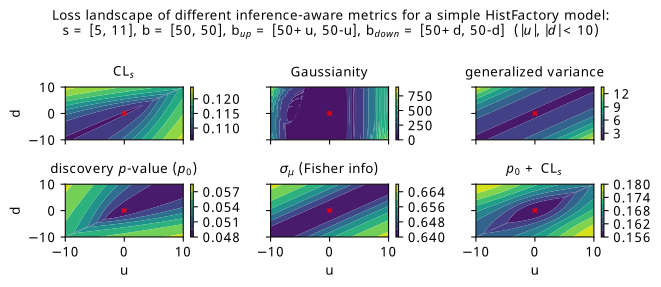
Figure 7.20 shows a scan over the loss landscape for many of the metrics we’re interested in, including the various \(p\)-values, signal strength uncertainty, and a few bonus metrics that haven’t been explored (Gaussianity and generalized variance).
The first thing that I’ll guide your eyes to is the striking asymmetry in the \(\mathrm{CL}_s\) and \(p_0\) landscapes. For each individual metric, the asymmetry arises from the uneven signal distribution across the bins. The pattern we see is as follows: both metrics enjoy when \(u\) and \(d\) are approximately the same (which can be said for pretty much all the metrics). However, we then see the asymmetry: \(\mathrm{CL}_s\) prefers \(u\) and \(d\) to be more negative (corresponding to up/down background variations below nominal in the first bin, and higher than nominal in the second), and \(p_0\) prefers \(u\) and \(d\) to be more positive (up/down variations below nominal in the second bin, and higher in the first). As to why this is, my first thoughts are that the role of \(\mu=0\) and \(\mu=1\) switches between the two metrics: for discovery, we’re testing a hypothesis of \(\mu=0\) on Asimov data for \(\mu=1\), and for \(\mathrm{CL}_s\), we’re testing \(\mu=1\) using Asimov data for \(\mu=0\). Then, in some way, the bin with the lower signal contribution (first bin) is more important for low \(\mathrm{CL}_s\), and the higher (second bin) is more important for a low discovery \(p\)-value. This explanation certaintly appeals to intuition in some ways – particularly that the discovery \(p\)-value wants the background variations as low as possible in the high-signal bin – but perhaps warrants examination through a more quantitative lens in future work.
One surprising artefact of the asymmetry between \(\mathrm{CL}_s\) and \(p_0\) is that a simple addition between them produces something fairly bowl-like around the point \(u = d = 0\), which we consider desirable from the perspective of an optimization procedure being able to achieve that minimum in practice. We can see this plot in the bottom-right of Figure 7.20, though it’s possible that one may want to match the scales of both quantities in practice by doing some weighted combination, which would make it so that one objective is not largely preferred over the other (e.g. here, something like \(\mathrm{CL}_s + 2p_0\) would approximately match their absolute values). Of course, we should keep in mind that this apparently useful behaviour may vanish with more model complexity, and also requires fitting the same model twice for each forward pass if we’re calculating two profile likelihoods.
As for the other metrics, they generally become lower when \(u\) and \(d\) become more equal, corresponding to \(b_{\mathrm{up}} \approx b_{\mathrm{down}}\). Interestingly though, there isn’t much preference to the absolute values of the up and down variations, as long as they’re equal. This is a little counterintuitive, as we’d expect everything to benefit more in the case of \(b = b_{\mathrm{up}} = b_{\mathrm{down}}\) (i.e. when \(u\), \(d\) = 0), or at least have some kind of different result depending on the size of the variations compared to the nominal background prediction. However, one interesting pathology I discovered when looking more closely at these metrics is that they all have the exact same values along the line \(u=d\). This line also happens to be where the minimum values of the metrics lie, which is even true for \(\mathrm{CL}_s\) and \(p_0\). It’s particularly hard to see this effect in Figure 7.20, so I’ve extrapolated just that line for all the metrics and plotted it in 1-D, shown in Figure 7.21. This is where Gaussianity can perhaps find utility: it’s the only quantity that varies asymmetrically along this line, and has a series of minima close to \(u = d = 0\). All other metrics retain exactly the same values for all models along the line, even those with values of \(b_{\mathrm{up}} = b_{\mathrm{down}}\) that differ from the nominal by 10 in each bin. We’ll see little bit of this behaviour to prefer \(b_{\mathrm{up}} = b_{\mathrm{down}}\) over \(b_{\mathrm{up}} = b_{\mathrm{down}} = b\) in the next section, where we revisit the neos example of Gaussian blobs through the lens of examining the relationship between the metrics.
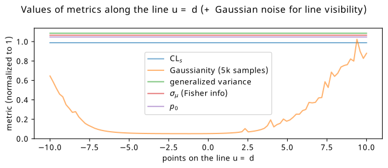
7.6 Gaussian blobs, again
Inspired by the studies in the previous section, I thought it would be useful to try the study from the neos paper a second time, but with some additional loss functions that we havent touched on yet (e.g. the discovery significance). Moreover, it may be illustrative to track the values of all the possible loss functions for each training strategy. In this way, we’ll be able to capture some idea of the relationships between quantities of interest – at least within the scope of the example itself.
We’ll look at the following choices for the training objective:
- BCE with data augmentation (serving again as a strong baseline)
- \(\mathrm{CL}_s\)
- \(p_0\)
- \(\sigma_{\mu}\)
- \(\mathrm{CL}_s\) + \(p_0\) (inspired by the previous section)
The pipeline is exactly the same as in Section 7.4, but with slightly different hyperparameters. The only ones that differ are:
- 5-layer neural network of size (128, 128, 128, 128, 1)6
- More epochs (~100) with the same batch size of 2000 to view the learning process over a longer period of time (it looks like some curves in Figure 7.19 would keep reducing with more training)
- Average over nine random seeds (previously seven – just a time constraint on both accounts)
- Bandwidth of 0.09 for the bKDE, found through trial and error by making it as small as possible while still producing stable training runs
As an additional layer of complexity, we’ll look at how the different training strategies perform when using a lower and higher number of bins for the neural network observable, to see if that influences the efficacy of the methods. The bandwidth should then in theory be shrunk in proportion to match the smaller bin widths, though
7.6.1 5-bin observable
Metrics
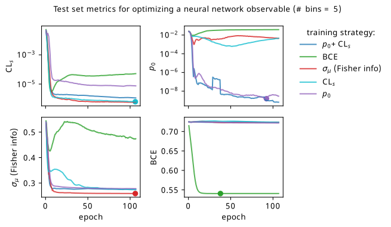
We’ll start by looking at the overall metrics when optimizing a 5-bin observable. These are shown in Figure 7.22, where the circular points show the epoch where we would stop training and select that set of models across all the random seeds (being loose with the distiction between validation and test sets in this toy problem setting). To recap the differences to Figure 7.19: we’re using a slightly different neural network (deeper & narrower), training for longer, and tracking all the different metrics for each training strategy.
By looking at the various metrics, we can see that training to minimze binary cross-entropy quickly converges to its best performance, since it’s not too difficult to separate the nominal signal and background samples from each other in data space (teal vs orange points). It’s worth pointing out that the small minima that appear early on in the three inference-aware metrics aren’t actually attained by the “optimal” solution that we decide on from looking at BCE alone. Even if we don’t train using those metrics, it then may still be worth tracking them to choose the best network.
When comparing BCE to other training strategies, note the difference in discovery \(p\)-value – apparently we miss out on a \(p\)-value that’s better by six orders of magnitude (a difference of \(\approx 4.75\sigma\) for those that prefer significance) if we choose BCE over something like \(p_0\) as an objective! It’s also interesting to note that there’s a very weak correlation between the models that are more inference-aware and their respective binary cross-entropies.
Another identifiable difference I’ll highlight is that training to minimize \(\sigma_{\mu}\) is much better than it was in the neos paper! It also follows a curve that resembles that gained from optimizing \(\mathrm{CL}_s\) for most of the metrics, which is much more in-line with expectations: remember that minimizing \(\mathrm{CL}_s\) will also minimize some version of \(\sigma_{\mu}\) too! So why were they so different in the neos paper? Well, the reason I seemed to stumble upon is that the wider and more shallow network of size (1024, 1024, 1) produces results with much higher variance for some reason when trained to optimize \(\sigma_{\mu}\). This is reflected in a statistic I didn’t show in the initial neos studies – the networks trained with different random seeds for the network parameters had very high variance! Why this occured for \(\sigma_{\mu}\) in particular is unclear to me, but the results with the narrower, deeper network used here are far more stable, which will be seen again when we dive into some of the resulting models.
As to why the the Fisher information estimate of \(\sigma_{\mu}\) minimizes \(\mathrm{CL}_s\) much more than \(p_0\), there are a number of potential causes. Here, we evaluate the Fisher information using Asimov data with \(\mu'=\gamma'=1\), i.e. the nominal signal + background hypothesis; earlier I said it shouldn’t matter too much what this choice is, but it could play a factor that \(\mathrm{CL}_s\) also uses this Asimov data configuration. It could also stem from the fact that \(q_0 \neq q_\mu\), but that’s pure speculation at this point – this should be studied further in future. The one definite takeaway is that all these metrics care about minimizing \(\sigma_{\mu}\) in some fashion, even if their mutual relationships are more complicated.
Commenting on other features: the new player in the game is the discovery \(p\)-value \(p_0\), which performs pretty well in the three inference aware metrics. It’s curious to note that choosing \(\mathrm{CL}_s\) or \(p_0\) as a training strategy limits the performance in the other to a degree, though this is alleviated when training using their combination \(\mathrm{CL}_s + p_0\) (as would be expected). There is a saying though – when one uses a metric as a training objective, it ceases to function well as a measure of performance, so we should take this all with a grain of salt and some lemon zest. In some ways this saying is only partially true here, as these metrics are calculated using a regular histogram instead of a bKDE, so they differ in a mild conceptual way. But despite that, all of \(\mathrm{CL}_s\), \(p_0\), and adding them together seem to perform identically with the value of \(\sigma_{\mu}\) they end up with.
There’s a couple of good performances that are worth highlighting – optimizing with respect to \(\sigma_{\mu}\) seems to match or beat using \(\mathrm{CL}_s\) as the training goal within its own metric for one! It could be that it’s an easier metric to minimize in practice, and so it reaches its optimal value much faster. Though, neither \(\mathrm{CL}_s\) nor \(\sigma_{\mu}\) seem to be super great at optimizing for \(p_0\) (but they handily beat binary cross-entropy). Using \(\mathrm{CL}_s + p_0\) also ends up with a slightly better \(p_0\) by a small amount than using \(p_0\) as the objective, while not compromising on any of the other metrics.
As a supplement to the metrics we just examined, it’s interesting to see the types of observable that the network learns for each metric. For this, I’ve plotted the resulting histograms for each training strategy that were learned by the best-performing models over each random seed. These histograms are further augmented by plots of the value of the neural network observable across data space, where the contours used are exactly the same as the bin intervals; you can do a one-to-one comparison by looking at the points enclosed in one contour, and find the bin that corresponds to that interval, where you’ll see those points accumulated (after scale factors are applied). Many plots are ahead, and we could talk about them for a long time, but they’re mainly there to try to give you the maximally verbose version of this study – some brief summative comments are provided that point out some of the features I notice to aid your mental dissection.
Consistent shapes of learned histograms are found in most metrics, with \(p_0\) showing the most variability. You’ll notice that sometimes the order of the bins appears to flip – that’s purely based on the nature of the random seed, and which side shows higher significance first during training. In many of the inference-aware metrics, we see a lot of bins that try to balance the up and down variations of the background, which were shown to be the best-case performance for our two-bin model in Section 7.5.1. Moreover, this is apparently a more important condition for \(\mathrm{CL}_s\) and \(\sigma_{\hat{\mu}}\) than it is for \(p_0\); the former tend to favor an even spread of equal up and down variations across all bins, while the latter seems to prefer isolated signal bins with no events from background or variations thereof.
In the neural network contours, e.g. in Figure 7.29, we can see again the effect of \(p_0\) aggressively trying to isolate the signal within the contours, whetheras \(\mathrm{CL}_s\) and \(\sigma_{\hat{\mu}}\) prefer contours with balanced contributions from the up and down variations. The general pattern though in most cases is that the contours appear to curve around the signal for our inference aware metrics, whether as binary cross entropy just tries to draw a good dividing line between the orange (background) and teal (signal) blobs.
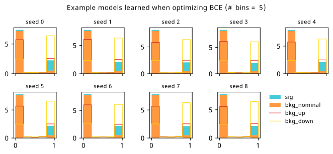

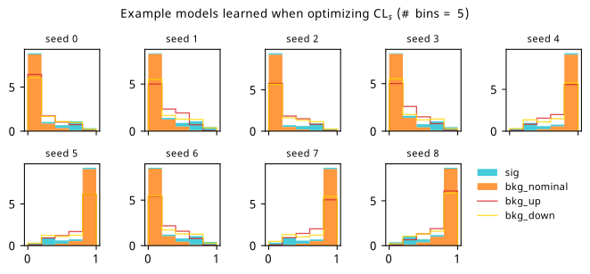
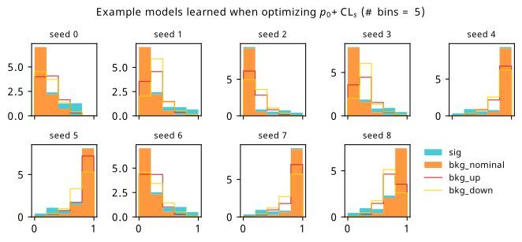
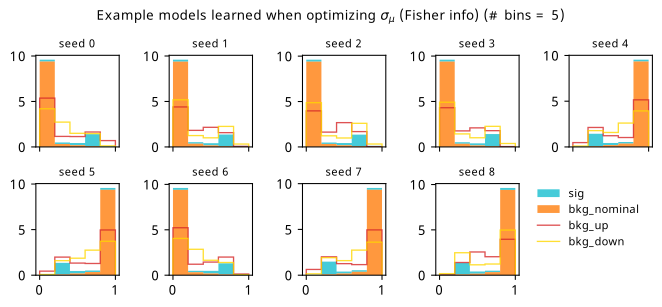
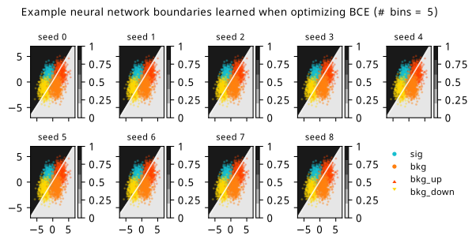
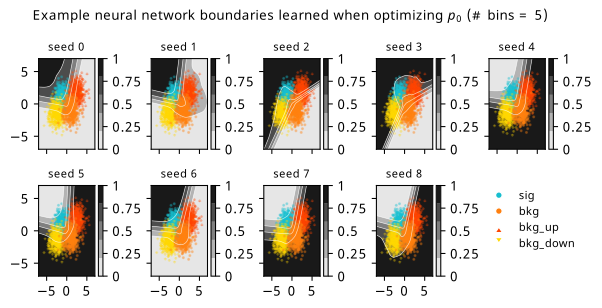
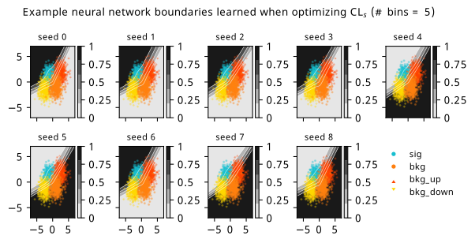
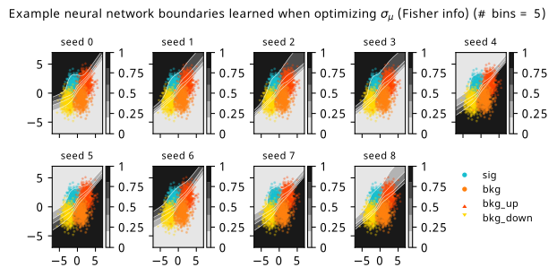
7.6.2 20-bin observable
Now we can see what happens when we provide a lot more bins to play with!
Metrics
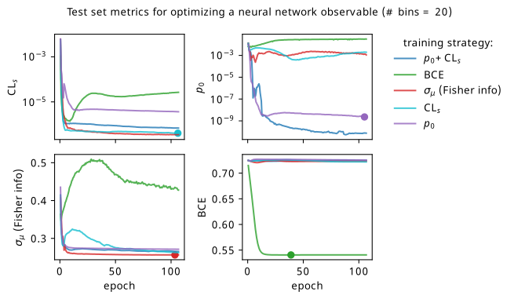
The story doesn’t change too much with more bins, with all the training strategies maintaining their mutual relationships as discussed earlier. The only marked difference is that \(p_0 + \mathrm{CL}_s\) outperforms \(p_0\) alone much more clearly here, which is pretty interesting to think about.
I’ll also show the histograms and neural network contours in data space – there are some pretty funky ones for the high-bin case. You’ll see that the types of histogram model learned by the neural network fluctuate much more with this additional granularity provided by the new bins, especially for the hypothesis test-based metrics (seed 2 and 3 are particularly strange for \(p_0\)).
For the contours themselves, there are many things to see here, but I’ll just point out one of my favourites: for seed 3 in Figure 7.36 and Figure 7.35, we see the network struggling to untie the systematic variations from the signal bins. However, for the same seed in Figure 7.37, where we’re training on a combination of those metrics, the network seems to manage! No idea why this behaviour is there, and indeed it is just one seed. But I thought that was pretty cool.
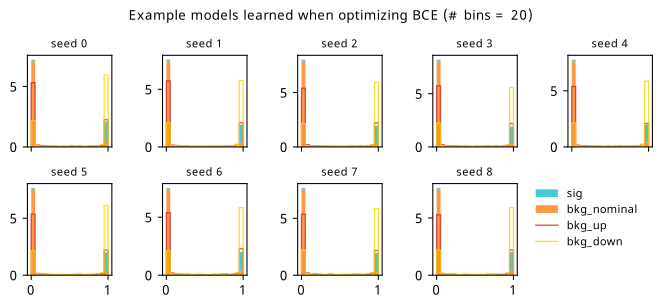
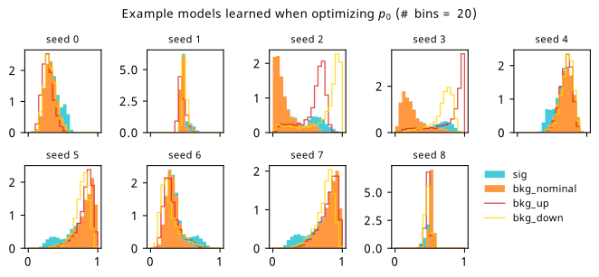

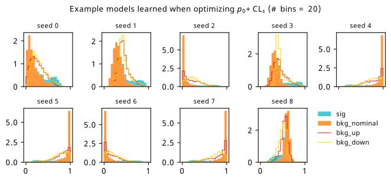
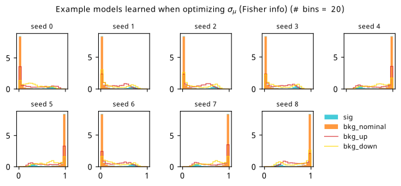
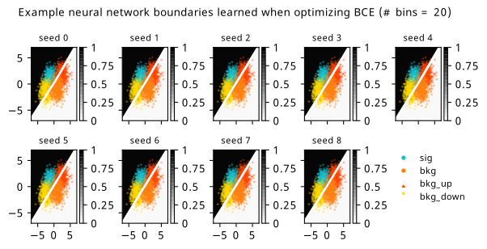
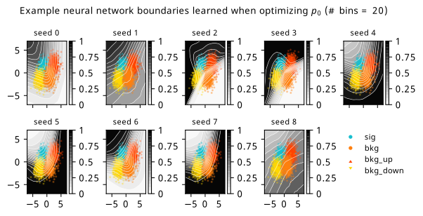
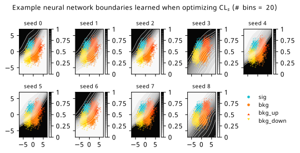
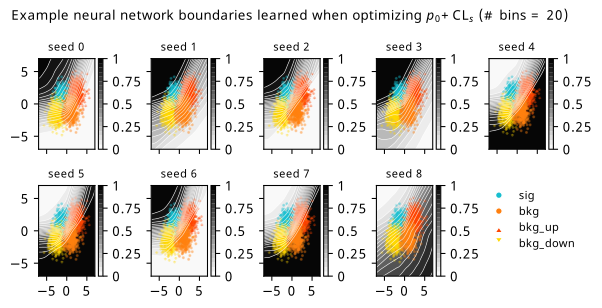
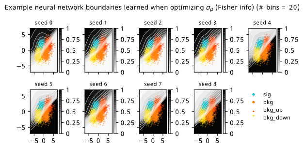
7.6.3 Optimizing binning and neural network simultaneously
One thing I also thought to try is, for a fixed number of bins, exploring what happens when the bin edges are made to be part of the optimization itself. Our free parameters are then \(\varphi = \left\{\varphi_{\mathrm{nn}}, \text{bin edges}\right\}\). To prevent the bin edges from being non-ascending, a jax.numpy.where statement was used to replace values that were larger than their neighboring edge with something just below it instead. As opposed to bin edges, we could have equivalently let the bin widths vary instead, and decide the last width as \(1-\sum_{i=0}^{\text{number of bins - 1}} \text{bin widths}_i\). In practice, this was found to be less stable when tried (often the sum of widths would exceed 1, and the last width becomes negative in that case). The endpoints \([0,1]\) were taken as fixed to ensure there isn’t optimization that accounts for the bKDE spilling out outside that range. In hindsight, though, I think things would be fine without this restriction, especially since the best network is selected based on the the version of the loss with no approximations (i.e. a pipeline that uses a regular histogram with the optimized binning).
Results from this experiment are fairly similar to the fixed-bin case, and are shown in Appendix A. The most notable finding is that \(\sigma_{\hat{\mu}}\) seemed to be the metric that made use of adapting the binning the most, but didn’t necessarily translate this to a big performance gain.
7.7 What’s next?
The first question that arises when reading this work for most – which mirrors accurately the same question I get when giving talks about this – is how does it scale to optimize with a \(p\)-value? Great question; I wish I knew. I’ve not personally managed to apply this to a real use-case where this method could thrive (e.g. a physics analysis where systematic uncertainties serve as a bottleneck for performance). But if we were to do so, scaling will come with some challenges: the first being that the accuracy of the model construction per iteration is dependent on the batch size being large enough to faithfully represent the analysis. In practice, this was overcome by applying scale factors to the batches that normalized their event counts to something expected by the whole sample (in our toy case, we made the arbitrary choice of a 1/5 ratio between signal and background, with a normalization to around ~10 events or so). Moreover, the unavoidable truth already mentioned in Section 7.4.2 is that the cost of the forward pass + backward pass = ~\(\mathcal{O}(2\times \text{analysis cost})\), which may scale in complicated ways depending on the complexity of the model at hand. One would probably need to prune any workspace to only include systematic uncertainties that have been studied to impact the analysis result significantly.
A whole world of things could be targets for being made differentiable. As a simple extension to what’s already been shown here, one could imagine making upper limits differentiable in the same way as the profile likelihood; there’s no conceptual restriction, but since there’s an optimization procedure to determine the upper limit (find the value of the parameter that gives a certain \(p\)-value), we can reuse the idea of implicit gradients that exist for functions with fixed points. There’s also a nice set of operations that could benefit from being differentiable curated by Kyle Cranmer, including things like sorting, statistical methods, and peer review (perhaps more relevant after AI take over the world – we can optimize their weights to help us get accepted at major conferences)7. It’s possible that I’ve gotten around to implementing some of these in relaxed (Simpson 2022a) by the time you read this, which is a differentiable toolbox of sorts that implements all of the advances that you’ve seen in this chapter.
While we’re on the topic, one particularly cool thing about relaxed is that it mimics the APIs of commonly used software tools in HEP. As an example, hypothesis tests are usually done with pyhf using the one-liner
pyhf.infer.hypotest(
mu_0, # null hypothesis for mu
data,
model,
test_stat, # = q_mu or q_0
)And indeed, the same call works for relaxed, with the bonus being you can differentiate the result:
relaxed.infer.hypotest(
mu_0, # null hypothesis for mu
data,
model,
test_stat, # = q_mu or q_0
lr = 1e-3 # learning rate for fits (done with grad descent)
)To see more of what this looks like in practice, I encourage you to check out the repository (e.g. the tests), a set of examples that I wrote (Simpson 2022b), and my PyHEP 2022 video tutorial.
Beyond quantities that stem from statistical inference, differentiable simulation is another promising area that could allow simulator-in-the-loop optimization. An example could be tuning your simulator parameters to model data by gradient descent, or perhaps having a pipeline with a loss function that simulates physics on-the-fly based on learned parameters. Moreover, there has been a very interesting recent line of work that looks at making key physics processes differentiable, such as the calculation of matrix elements for scattering amplitudes (Heinrich and Kagan 2022) and parton showering (Nachman and Prestel 2022). This is certainly an area to keep an eye on over the coming years.
7.8 Credits
Many thanks go to Lukas Heinrich for the inspiration, debugging help, and original proposal, and also to Tomasso Dorigo/Pablo de Castro for their initial assistance and work on INFERNO (Castro and Dorigo 2019), which lay lots of the groundwork for this topic. Thanks also to the other pyhf authors Matthew Feickert and Giordon Stark, and to Alex Held for his great notebook on differentiable cuts and other advice.
We don’t have to use gradient based methods! They’re just very well implemented and studied, as well as enabling things like this paradigm.↩︎
For non-uniform bin widths, an extension of the bKDE to non-uniform bandwidths could be interesting – one could keep the bin width/bandwidth ratio fixed for each bin, and if the event falls in a given bin, the resulting bandwidth from using that ratio is applied to that event. This would make the analogy between bin width and bandwidth more general in some ways, albeit at the cost of someone’s coding time.↩︎
If you’re less of a holistic person and would prefer something more quantitative, you can see a real-life carving of the “lagom” amount in Lund, just outside one of the main university buildings.↩︎
Originally an acronym for neural end-to-end optimized statistics, but acronyms are annoying, so I don’t really make that explicit anymore. Hopefully the rest of this section will also convince you that we don’t need to get too caught up with naming anyway.↩︎
I did some work on trying to cache these models and update them in-place – if you’re interested, see this
pyhfissue↩︎Initially, this was chosen to be less wide to maybe slow down the learning process a touch, though the extra layers mitigates that to some degree. It turned out that this made the training much more stable for some reason (less variability in the metrics), so I kept it.↩︎
Thinking about it though, AI having a workshop about the workings of AI would be more like biology/philosophy. Perhaps this whole thesis is then unethical through this lens, exploiting and manipulating machines for our own curiosity. The complementary idea of inverting this exploitation is a rather dystopian one.↩︎